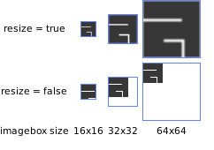

Module: wibox.widget.imagebox
A widget to display image.
The wibox.widget.imagebox is part of the Awesome WM’s wiboxes system (see 03-declarative-layout.md).
This widget displays an image. The image can be a file, a cairo image surface, or an rsvg handle object (see the image property).
Use a wibox.widget.imagebox
local my_imagebox = wibox.widget.imagebox(beautiful.awesome_icon, false)
Alternatively, you can declare the imagebox widget using the declarative pattern (Both codes are strictly equivalent):
local my_imagebox = wibox.widget { image = beautiful.awesome_icon, resize = false, widget = wibox.widget.imagebox }
Info:
- Copyright: 2010 Uli Schlachter
- Author: Uli Schlachter
Constructors
| wibox.widget.imagebox ([image[, resize_allowed[, clip_shape]]]) | Returns a new wibox.widget.imagebox instance. | |
Object properties
| image | image | The image rendered by the imagebox. | |
| clip_shape | function or gears.shape | Set a clip shape for this imagebox. | |
| resize | boolean | Should the image be resized to fit into the available space? | |
| children | table | Get or set the children elements. | Inherited from wibox.widget |
| all_children | table | Get all direct and indirect children widgets. | Inherited from wibox.widget |
| forced_height | number or nil | Force a widget height. | Inherited from wibox.widget |
| forced_width | number or nil | Force a widget width. | Inherited from wibox.widget |
| opacity | number | The widget opacity (transparency). | Inherited from wibox.widget |
| visible | boolean | The widget visibility. | Inherited from wibox.widget |
| buttons | table | The widget buttons. | Inherited from wibox.widget |
Object methods
| :set_image (image) -> boolean | Set the imagebox image. | |
| :set_clip_shape (clip_shape) | Set a clip shape for this imagebox. | |
| :set_resize (allowed) | Should the image be resized to fit into the available space? | |
| :setup {[args]} | Set a declarative widget hierarchy description. | Inherited from wibox.widget |
| :add_button (button) | Add a new awful.button to this widget. | Inherited from wibox.widget |
| :emit_signal_recursive (signal_name, ...) | Emit a signal and ensure all parent widgets in the hierarchies also forward the signal. | Inherited from wibox.widget |
| :emit_signal (name, ...) | Emit a signal. | Inherited from gears.object |
| :connect_signal (name, func) | Connect to a signal. | Inherited from gears.object |
| :weak_connect_signal (name, func) | Connect to a signal weakly. | Inherited from gears.object |
Signals
| widget::layout_changed | When the layout (size) change. | Inherited from wibox.widget |
| widget::redraw_needed | When the widget content changed. | Inherited from wibox.widget |
| button::press | When a mouse button is pressed over the widget. | Inherited from wibox.widget |
| button::release | When a mouse button is released over the widget. | Inherited from wibox.widget |
| mouse::enter | When the mouse enter a widget. | Inherited from wibox.widget |
| mouse::leave | When the mouse leave a widget. | Inherited from wibox.widget |
Constructors
- wibox.widget.imagebox ([image[, resize_allowed[, clip_shape]]])
-
Returns a new wibox.widget.imagebox instance.
This is the constructor of wibox.widget.imagebox. It creates a new instance of imagebox widget.
Alternatively, the declarative layout syntax can handle wibox.widget.imagebox instanciation.
The image can be a file, a cairo image surface, or an rsvg handle object (see the image property).
Any additional arguments will be passed to the clip shape function.
Parameters:
- image
image
The image to display (may be
nil). (optional) - resize_allowed
boolean
If
false, the image will be clipped, else it will be resized to fit into the available space. (optional) - clip_shape function A gears.shape compatible function. (optional)
Returns:
-
wibox.widget.imagebox
A new wibox.widget.imagebox widget instance.
- image
image
The image to display (may be
Object properties
- image image · 1 signal
-
The image rendered by the imagebox.
It can can be any of the following:
- A string : Interpreted as the path to an image file,
- A cairo image surface : Directly used as is,
- An rsvg handle object : Directly used as is,
nil: Unset the image.
Type constraints:
- image image The image to render.
See also:
Click to display more Emit signals:
property::imageWhen the image value changes.selfwibox.widget.imagebox The object which changed (useful when connecting many object to the same callback).
- clip_shape function or gears.shape · 1 signal
-
Set a clip shape for this imagebox.
A clip shape define an area where the content is displayed and one where it
is trimmed.
Type constraints:
- clip_shape function or gears.shape A gears.shape compatible shape function.
See also:
Click to display more Emit signals:
property::clip_shapeWhen the clip_shape value changes.selfwibox.widget.imagebox The object which changed (useful when connecting many object to the same callback).new_valueclip_shape The new value affected to the property.
- resize boolean · 1 signal
-
Should the image be resized to fit into the available space?

Click to display more Emit signals:
property::resizeWhen the resize value changes.selfwibox.widget.imagebox The object which changed (useful when connecting many object to the same callback).new_valueresize The new value affected to the property.
- children table · Inherited from wibox.widget
-
Get or set the children elements.
Type constraints:
- children table The children.
- all_children table · Inherited from wibox.widget
-
Get all direct and indirect children widgets.
This will scan all containers recursively to find widgets
Warning: This method it prone to stack overflow id the widget, or any of its
children, contain (directly or indirectly) itself.
Type constraints:
- children table The children.
- forced_height number or nil · Inherited from wibox.widget
-
Force a widget height.
Type constraints:
- height
number or nil
The height (
nilfor automatic)
- height
number or nil
The height (
- forced_width number or nil · Inherited from wibox.widget
-
Force a widget width.
Type constraints:
- width
number or nil
The width (
nilfor automatic)
- width
number or nil
The width (
- opacity number · Inherited from wibox.widget
-
The widget opacity (transparency).
Type constraints:
- opacity number The opacity (between 0 and 1) (default 1)
- visible boolean · Inherited from wibox.widget
- The widget visibility.
- buttons table · Inherited from wibox.widget
-
The widget buttons.
The table contains a list of awful.button objects.
See also:
Object methods
- :set_image (image) -> boolean
-
Set the imagebox image.
The image can be a file, a cairo image surface, or an rsvg handle object (see the image property).
Parameters:
- image image The image to render.
Returns:
-
boolean
trueon success,falseif the image cannot be used.See also:
Usage:
my_imagebox:set_image(beautiful.awesome_icon)
my_imagebox:set_image('/usr/share/icons/theme/my_icon.png')
- :set_clip_shape (clip_shape)
-
Set a clip shape for this imagebox.
A clip shape define an area where the content is displayed and one where it
is trimmed.
Any other parameters will be passed to the clip shape function.
Parameters:
- clip_shape
function or gears.shape
A
gears_shapecompatible shape function.
See also:
- clip_shape
function or gears.shape
A
- :set_resize (allowed)
-
Should the image be resized to fit into the available space?
Parameters:
- allowed
boolean
If
false, the image will be clipped, else it will be resized to fit into the available space.
- allowed
boolean
If
- :setup {[args]} · Inherited from wibox.widget
-
Set a declarative widget hierarchy description.
See The declarative layout system
Parameters:
- args An array containing the widgets disposition
- :add_button (button) · Inherited from wibox.widget
-
Add a new awful.button to this widget.
Parameters:
- button awful.button The button to add.
- :emit_signal_recursive (signal_name, ...) · Inherited from wibox.widget
-
Emit a signal and ensure all parent widgets in the hierarchies also
forward the signal. This is useful to track signals when there is a dynamic
set of containers and layouts wrapping the widget.
Parameters:
- signal_name string
- ... Other arguments
- :emit_signal (name, ...) · Inherited from gears.object
-
Emit a signal.
Parameters:
- name string The name of the signal.
- ... Extra arguments for the callback functions. Each connected function receives the object as first argument and then any extra arguments that are given to emit_signal().
- :connect_signal (name, func) · Inherited from gears.object
-
Connect to a signal.
Parameters:
- name string The name of the signal.
- func function The callback to call when the signal is emitted.
- :weak_connect_signal (name, func) · Inherited from gears.object
-
Connect to a signal weakly.
This allows the callback function to be garbage collected and automatically disconnects the signal when that happens.
Warning: Only use this function if you really, really, really know what you are doing.
Parameters:
- name string The name of the signal.
- func function The callback to call when the signal is emitted.
Signals
- widget::layout_changed · Inherited from wibox.widget
-
When the layout (size) change.
This signal is emitted when the previous results of
:layout()and:fit()are no longer valid. Unless this signal is emitted,:layout()and:fit()must return the same result when called with the same arguments.See also:
- widget::redraw_needed · Inherited from wibox.widget
-
When the widget content changed.
This signal is emitted when the content of the widget changes. The widget will
be redrawn, it is not re-layouted. Put differently, it is assumed that
:layout()and:fit()would still return the same results as before.See also:
- button::press · Inherited from wibox.widget
-
When a mouse button is pressed over the widget.
Arguments:
- self table The current object instance itself.
- lx number The horizontal position relative to the (0,0) position in the widget.
- ly number The vertical position relative to the (0,0) position in the widget.
- button number The button number.
- mods table The modifiers (mod4, mod1 (alt), Control, Shift)
- find_widgets_result The entry from the result of
wibox.drawable:find_widgets for the position that the mouse hit.
- drawable wibox.drawable The drawable containing the widget.
- widget widget The widget being displayed.
- hierarchy wibox.hierarchy The hierarchy managing the widget’s geometry.
- x number An approximation of the X position that the widget is visible at on the surface.
- y number An approximation of the Y position that the widget is visible at on the surface.
- width number An approximation of the width that the widget is visible at on the surface.
- height number An approximation of the height that the widget is visible at on the surface.
- widget_width number The exact width of the widget in its local coordinate system.
- widget_height number The exact height of the widget in its local coordinate system.
See also:
- button::release · Inherited from wibox.widget
-
When a mouse button is released over the widget.
Arguments:
- self table The current object instance itself.
- lx number The horizontal position relative to the (0,0) position in the widget.
- ly number The vertical position relative to the (0,0) position in the widget.
- button number The button number.
- mods table The modifiers (mod4, mod1 (alt), Control, Shift)
- find_widgets_result The entry from the result of
wibox.drawable:find_widgets for the position that the mouse hit.
- drawable wibox.drawable The drawable containing the widget.
- widget widget The widget being displayed.
- hierarchy wibox.hierarchy The hierarchy managing the widget’s geometry.
- x number An approximation of the X position that the widget is visible at on the surface.
- y number An approximation of the Y position that the widget is visible at on the surface.
- width number An approximation of the width that the widget is visible at on the surface.
- height number An approximation of the height that the widget is visible at on the surface.
- widget_width number The exact width of the widget in its local coordinate system.
- widget_height number The exact height of the widget in its local coordinate system.
See also:
- mouse::enter · Inherited from wibox.widget
-
When the mouse enter a widget.
Arguments:
- self table The current object instance itself.
- find_widgets_result The entry from the result of
wibox.drawable:find_widgets for the position that the mouse hit.
- drawable wibox.drawable The drawable containing the widget.
- widget widget The widget being displayed.
- hierarchy wibox.hierarchy The hierarchy managing the widget’s geometry.
- x number An approximation of the X position that the widget is visible at on the surface.
- y number An approximation of the Y position that the widget is visible at on the surface.
- width number An approximation of the width that the widget is visible at on the surface.
- height number An approximation of the height that the widget is visible at on the surface.
- widget_width number The exact width of the widget in its local coordinate system.
- widget_height number The exact height of the widget in its local coordinate system.
See also:
- mouse::leave · Inherited from wibox.widget
-
When the mouse leave a widget.
Arguments:
- self table The current object instance itself.
- find_widgets_result The entry from the result of
wibox.drawable:find_widgets for the position that the mouse hit.
- drawable wibox.drawable The drawable containing the widget.
- widget widget The widget being displayed.
- hierarchy wibox.hierarchy The hierarchy managing the widget’s geometry.
- x number An approximation of the X position that the widget is visible at on the surface.
- y number An approximation of the Y position that the widget is visible at on the surface.
- width number An approximation of the width that the widget is visible at on the surface.
- height number An approximation of the height that the widget is visible at on the surface.
- widget_width number The exact width of the widget in its local coordinate system.
- widget_height number The exact height of the widget in its local coordinate system.
See also: